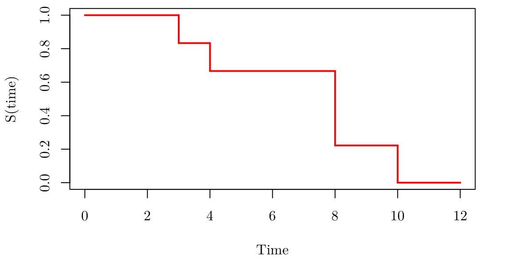

par(family = "Latin Modern Roman 10", mar = c(5.1, 4.1, 0.5, 2.1))
plot(0, 0, type="l", xlim=c(0,12), ylim=c(0,1), xlab = "Time", ylab = "S(time)")
segments(x0 = c(0, 3, 4, 8, 10), x1=c(3, 4, 8, 10, 12), y0=c(1, 5/6, 2/3, 2/9,0), y1 = c(1, 5/6, 2/3, 2/9, 0), lwd = 2, col = "red")
segments(x0 = c(3, 4, 8, 10), x1=c(3, 4, 8, 10), y0=c(1, 5/6, 2/3, 2/9 ), y1 = c(5/6, 2/3, 2/9, 0 ), lwd = 2, col = "red")